How to Be Emo in Middle School
Part 1 of 3: Initial Steps
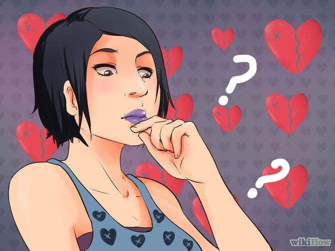
- Determine why you want to do this. If you want to be labeled "emo" to seem cool, are trying to fit in with a clique, impress your friends or just want to scare people, then you are doing this for the wrong reasons. Trying too hard only results in losing your real self and being labeled as a poser. However, if this is who you are and you just need guidance, then chances are, you're just trying to stay true to yourself.
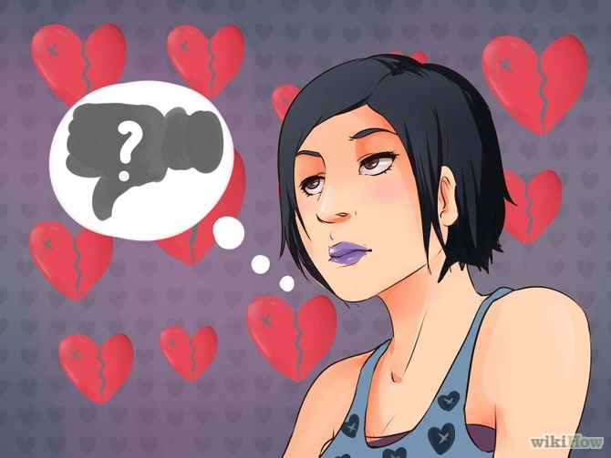
- Understand the consequences. By cultivating the Emo lifestyle, you have set yourself up for not fitting in. Although fitting in isn't something you should be desperately worried about, you must understand that sticking out usually involves many unpleasant things, such as bullying, harassment, being called names and generally being misunderstood. If you have the strength to stand up to the student body and perhaps your own parents, then go ahead. However, if you don't want to experience the various displeasure previously mentioned, then think about laying low and not parading around as the different kid. Don't let the bullies get to you, show them you can't deal with their stupidity.
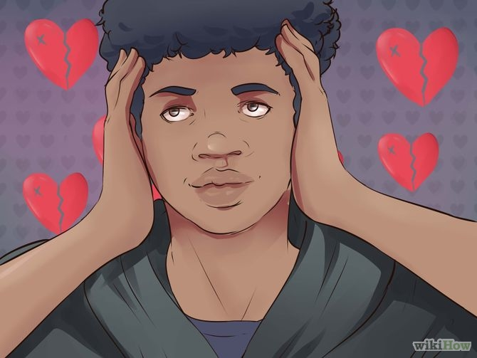
- Love who you are love and how you look. Don't listen to their comments. Dress the way you want to express what you feel.
Part 2 of 3: Fashion Style
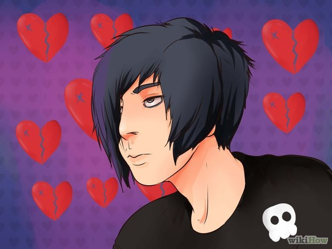
- Hair. The classic emo hairstyle focuses on dark hair with light colored streaks. There are different styles for boys and girls, and for long and short hair.If you are a boy, go for short, choppy hair and asymmetric bangs. If you have long hair and want to keep it, keep long bangs that can be swiped across your forehead and one eye.If you are a girl, you can keep long hair and simply layer it or have a shorter cut with razor-cut bangs.Dying your hair extreme colors is also very common in emo culture..
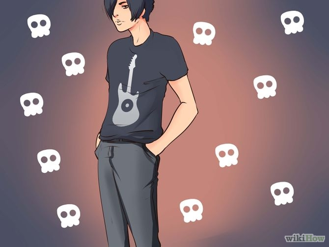
- Clothes. For both boys and girls, band shirts and tight-fitting jeans are synonymous with emo style. However, you can also mix darks with bright colors (black and red, for example)You can also add accessories to your clothes, such as pins or badges. Belts with unique buckles are also very popular among emo kids.
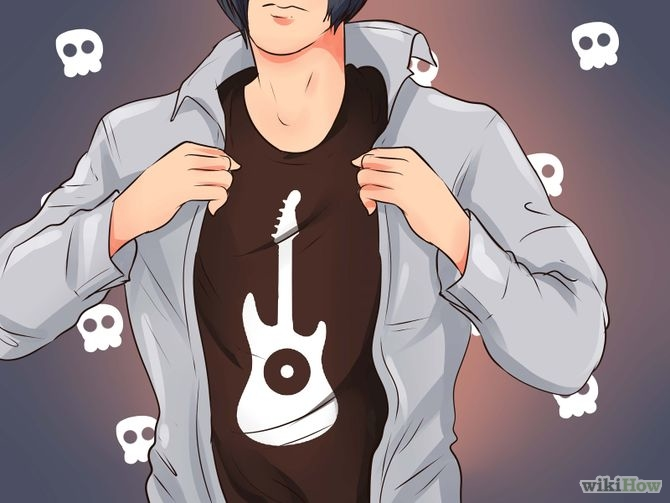
- Work around your uniform, if you have to wear one. Are you stuck with school blazers and checkered dresses? If you've been restricted by a dress code or uniform, don't panic.Try wearing a long sleeved, dark colored shirt under your uniform shirt and rolling the sleeves up.Put badges and pins on your tie, bag and blazer.Wear knee length socks, or Converse shoes.Leggings, tights and fishnets go well underneath school skirts. If you have to wear a certain color of tights, try ripping them or making ladders.Wear bracelets or wristbands.
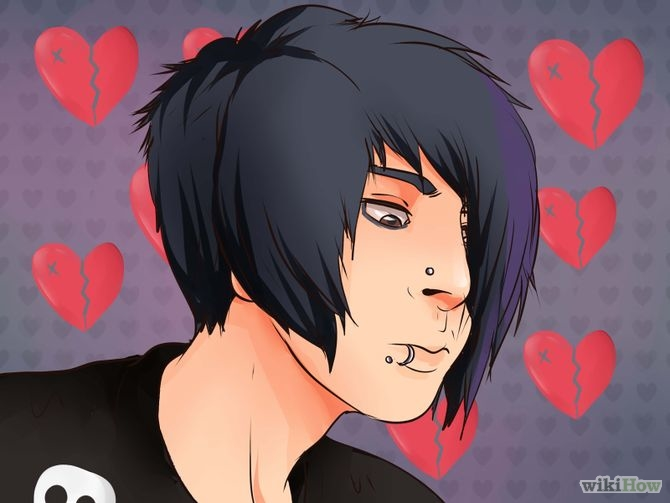
- Piercings. If your parents will let you, piercings are a fashionable part of the emo lifestyle. These include nose, eyebrow and lip rings.
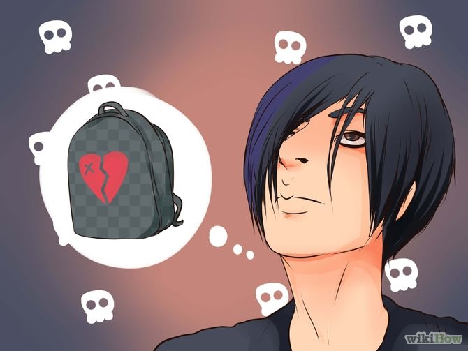
- Try getting an awesome bag or something that isn't going to get you in trouble. If you don't care about getting in trouble, go for it. But be careful what you choose.
Part 3 of 3: Learn About the Emo Lifestyle
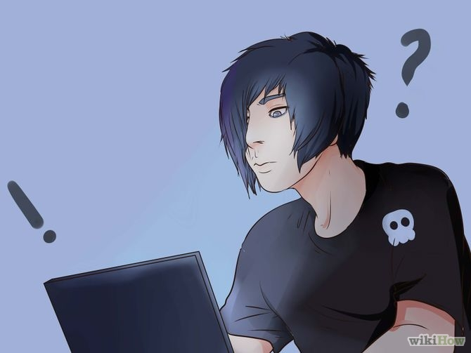
- Understand the culture. The more you know about Emo, the less obstacles you will come to face. A poor understanding of this lifestyle usually leads to a dead end, end up being known as a stereotyping poser and losing yourself. Break through the surface and understand what Emo really is. Don't pretend to know things you don't and don't be narrow minded.
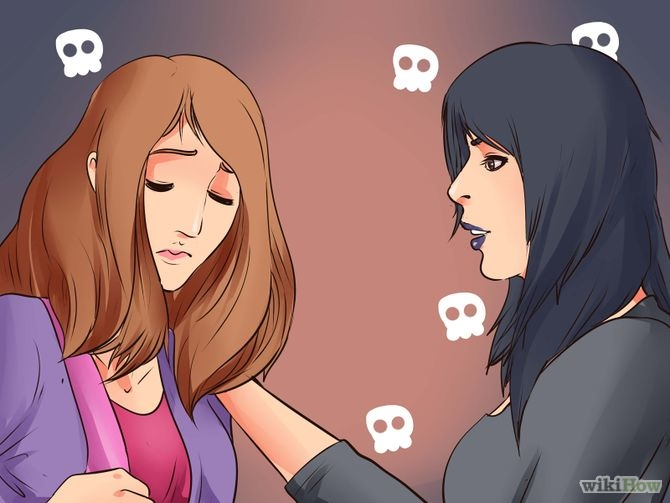
- Be in touch with your emotions. Show empathy towards other people. Emos are in touch with their emotions and because of this, they are great people to talk to when you are feeling down.
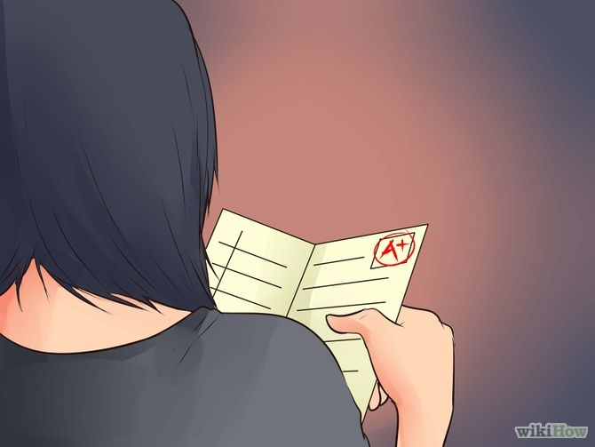
- Be a good student. Being Emo doesn't mean failing every subject. Getting good grades will help teachers and parents loosen up on you, especially if they're unhappy with your "new style." Do your homework and hand things in on time. Study for tests. Be punctual and polite.
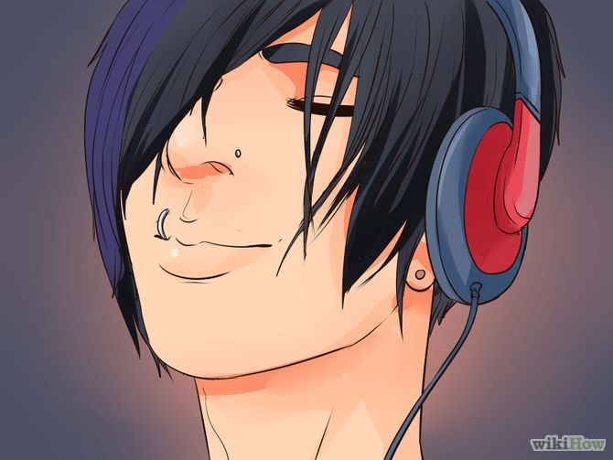
- Listen to the music. Broaden your musical tastes by not just listening to Emo bands, but Screamo, Hardcore, Post-Hardcore and Dark Cabaret. Go to concerts. The more involved you are in the Emo music scene, the better you will understand the culture and avoid being labelled a poser.